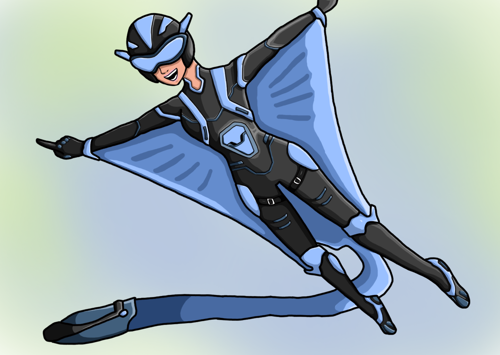
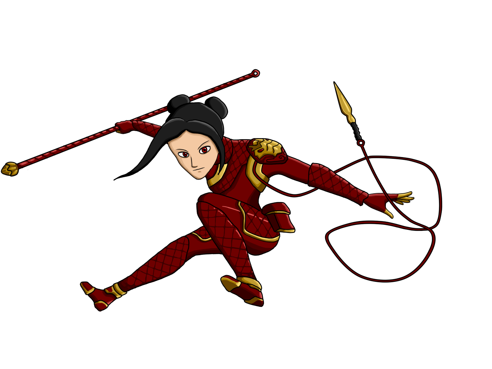
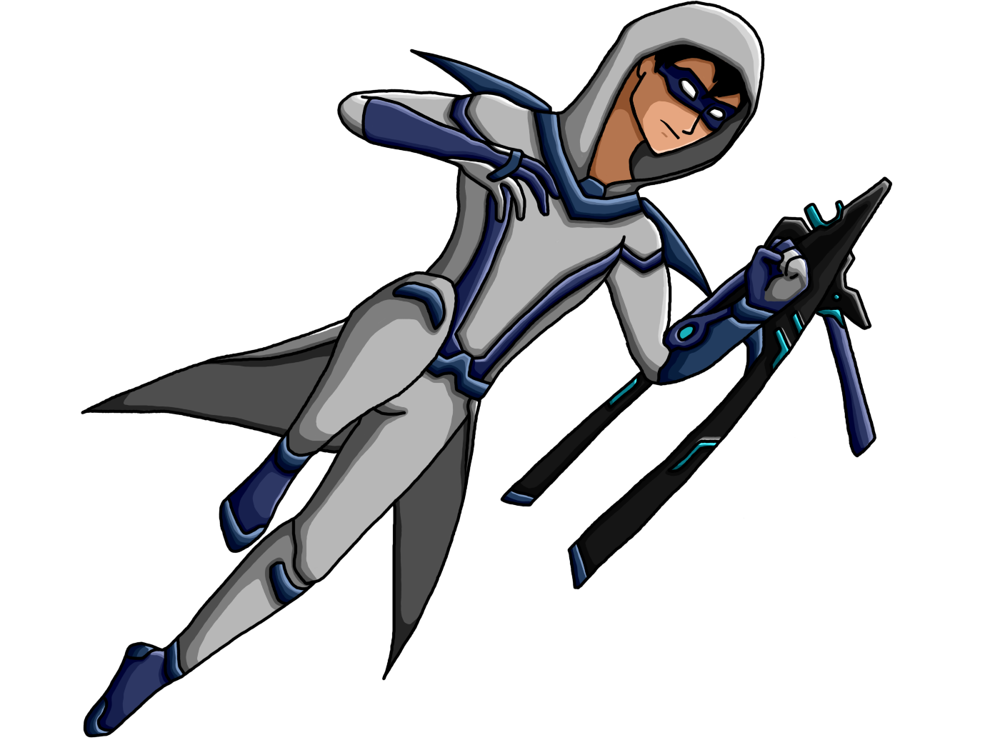
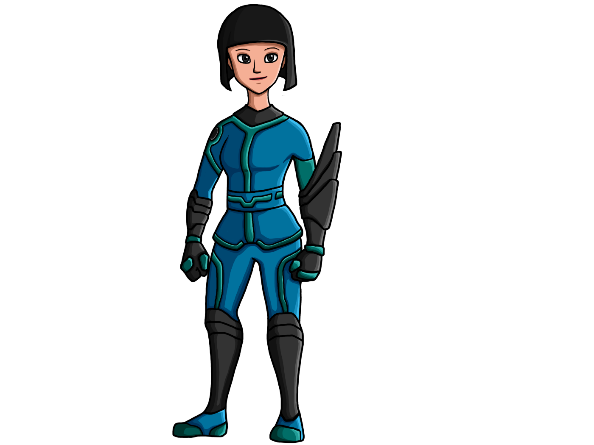
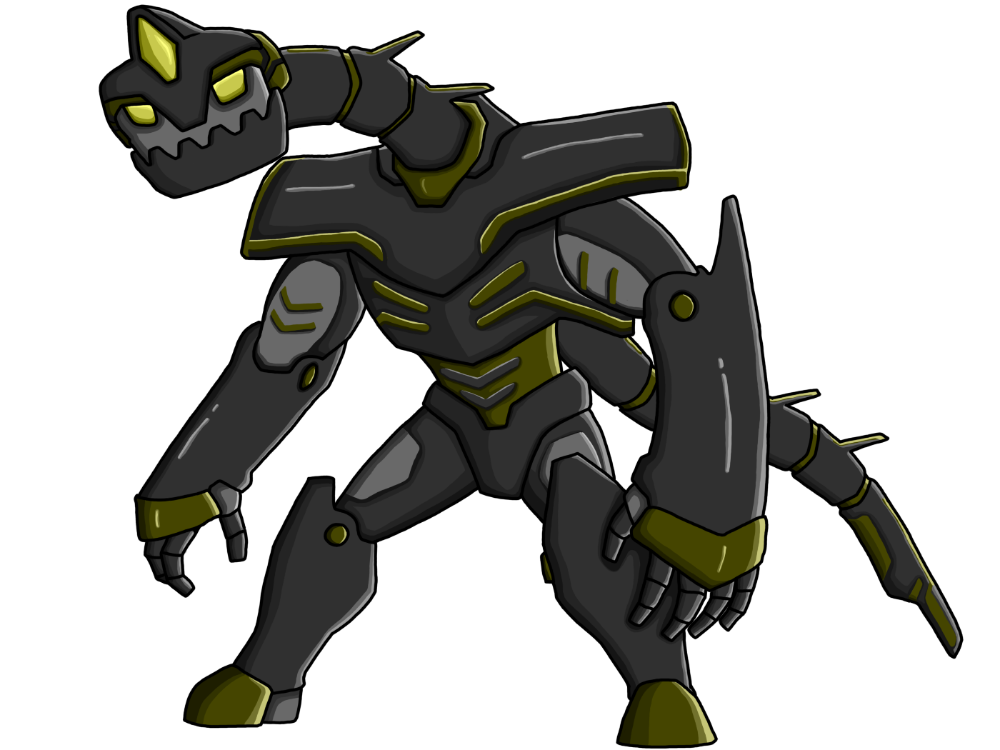
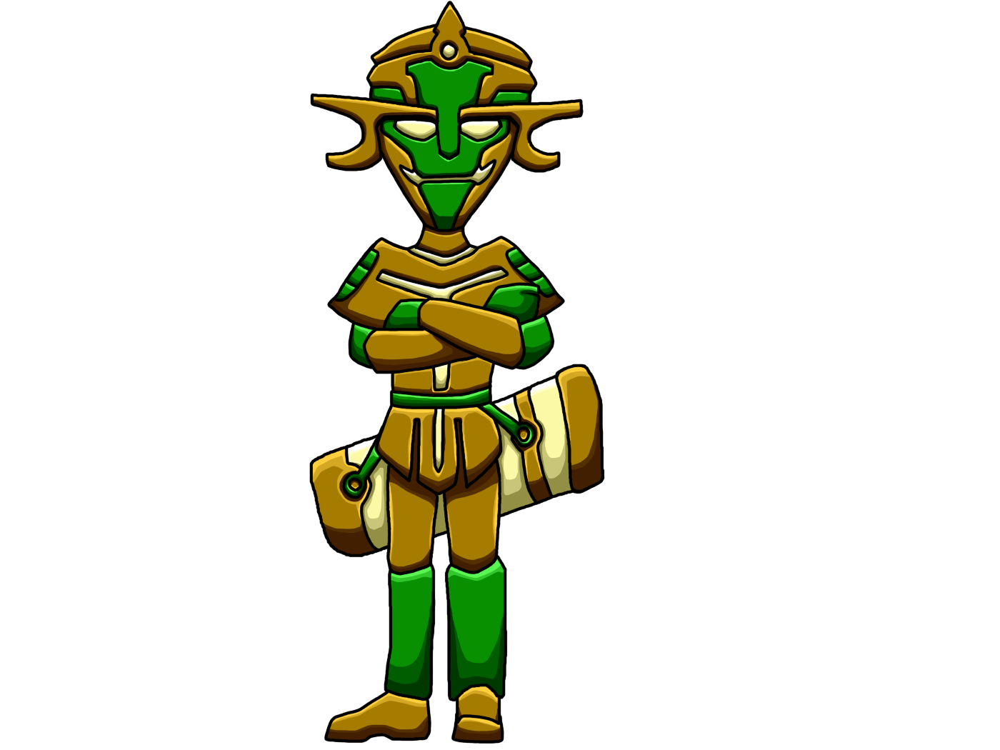

Heroes of the Sixth House is an oh-hold creative writing project that explores Thailand in the age of superheroes.
The series focuses on a group of teenage superheroes as they try to balance their normal life with their superhero life, all the while Thailand is constantly under attack.
The most experienced member of the team, he had been working as a superhero in Bangkok for 6 years before transferring to Khon Kaen into the 6th house.
She is the most adept of the team, having trained, and mastered, various kinds of martial arts in order to both help the innocent and live up to her father's standards.
Having been trained by a secret organization since childhood, he is the deadliest member of the team, despite having no special powers himself.
Ai was gifted with immense power but also its curse - she couldn't control it. However, she still trains everyday, each training harder than the last, in hopes of mastering it eventually.
A terrible accident befell a brave boy, leaving his body paralyzed in a hospital. His conscience and courage, however, was uploaded into a massive robotic titan modeled after one of Khon Kaen's most renowned prehistoric beasts.
A boy with a genius intellect, Ram graduated in everything required at the age of 14 and lived a carefree and cocky life. His mistakes eventually backfired, and before he lost himself, Muay Lek took him into the 6th house and treated him as her younger brother.